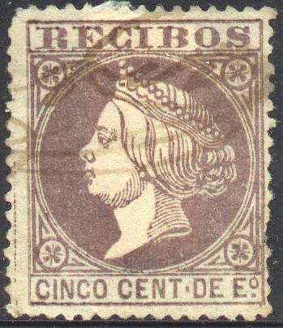
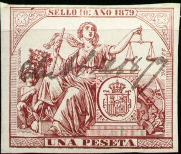
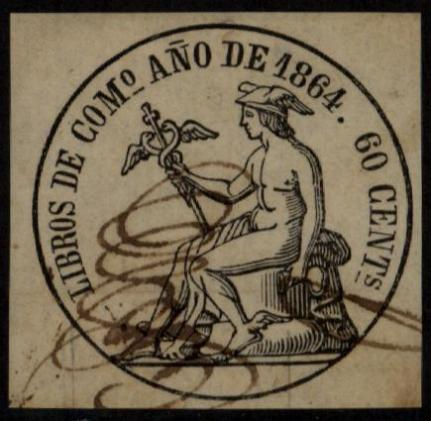

{kind=link}



Queen Isabella, 5 c 'RECIBOS' lilac of 1867, 1862 50 c issue and 1866 5 c issue.
Return To Catalogue - Spain - Spain telegraph stamps - Spain fiscal stamps, part 2 and miscellaneous
Note: on my website many of the
pictures can not be seen! They are of course present in the
catalogue;
contact me if you want to purchase it.
A huge number of fiscal stamps was issued in Spain. I'll only list the stamps that I have seen myself here. Any additional scans are always welcome!

Queen Isabella, 5 c 'RECIBOS' lilac of 1867, 1862 50 c issue and
1866 5 c issue.
50 c blue on yellow (1862), 5 c lilac (1867). A larger design was issued in 1866 with Queen Isabella in a circle in the value 5 c lilac.


In the above design with 'RECIBOS' and a value in the center exist: 50 m lilac (1868), 50 m lilac (1869), 50 m lilac (1870), 12 c violet (1871), 12 c green (1873, see picture above), 12 c red (1874) and 12 c blue (1875). The year is indicated in the bottom part of the fiscal stamp. The 12 c red exists with overprint "IMPUESTO DE GUERRA 50 por 100" (issued in 1874), this overprint exists in three types (one extending over two stamps). Two other overprints also exist on the 12 c red: "Adm.on Econ. ca de Tarragona Impuesto de guerra 50 p %" and "IMPUESTO DE GUERRA 50 P%" (in a circle).


In the above design were issued 12 c blue (1876), 12 c brown (1877), 12 c blue (1878), 12 c red (1879), 12 c brown (1880) and 12 c blue (1881). The year is indicated on top of the fiscal stamp.

(This stamp with inscription "RECIBOS Y CUENTAS" is a
fiscal stamp of Cuba)
The above stamp was issued in 1875. In this design appeared 5 c blue, 5 p black and 25 p green.
Stamps with Impuesto de Ventas also exist with the portrait of Alphonso XII in the values 5 c blue and 50 c black (both issued in 1877).
In 1879 the use of 'Impto de Ventas' stamps was stopped.

The above design was issued in 1862. The following values exist: 1 r brown on yellow, 2.50 R red on yellow, 5 R green on yellow, 10 R brown on yellow, 15 R blue on yellow, 20 R brown on lilac, 25 R violet on lilac, 30 R red on lilac, 35 R blue on lilac, 40 R green on lilac, 45 R blue on lilac, 50 R blue on lilac, 60 R violet on lilac, 70 R red onlilac, 80 R orange on lilac, 90 R green on brown, 100 R red on brown, 125 R blue on brown, 150 R brown on brown, 175 R violet on brown and 200 R lilac on brown.

A similar design, but with inscription "DOCUMs. DE
POLICIA" was issued for Cuba.
An other design with inscription GIRO were issued in 1867 (Queen Isabella).
In 1870 a new series was issued (as 1867, but
with arms in center).
In 1875 a new inscription was added "IMPTO DE GUERRA 50
POR%" and the arms are embossed:
(In this design the following values exist: 5c, 10c, 25c, 62c,
1.25P, 2.50P, 3.75P, 5P, 6.35P, 7.50P, 8.75P, 10P, 11.25P,
12.50P, 15P, 17.50P, 20P, 23.50P, 25P, 31.25P, 37.50P, 43.75P,
and 50P, all in the colour blue)
In 1900 yet another set of Giro stamps was issued (arms in an ellipse, 10 c to 100 P in blue, or 1902: 10 c to 100 P in violet).

5 c blue 10 c green 25 c red 50 c orange 1 p violet
I was told that these stamps were used for money orders. They have controll numbers on the back. I have seen the 10 c tete beche.
10 c printed tete-beche
Value of the stamps |
|||
vc = very common c = common * = not so common ** = uncommon |
*** = very uncommon R = rare RR = very rare RRR = extremely rare |
||
| Value | Unused | Used | Remarks |
| 5 c | *** | c | |
| 10 c | *** | c | Tete-beche: RRR |
| 25 c | *** | c | |
| 50 c | *** | c | |
| 1 P | *** | * | |

This and similar types were first issued in 1852 up to 1864
(inscription "SELLO")

Sello 9o. with image of lion and Queen, issued 1868.


1872 and 1876 types, inscription "SELLO"
Several large sized fiscal stamps were issued, examples:


Stamps with inscription "CHEQUES" were issued from 1913 onwards; I've seen 30 c blue, 60 c red and 1.20 P yellow.

This type was first issued in 1862: 60 c black. Two other stamps
in this design were issued in 1863 (60 c black) and 1864 (60 c
black). The year is included in the design.
Spain fiscal stamps, part 2 and miscellaneous
Stamps - Briefmarken - Timbres-Poste - Postzegels - Francobolli - Estampillas
{kind=link}
{kind=link}